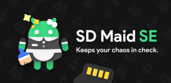

¿Te has preguntado alguna vez qué pasa con los archivos que quedan en tu dispositivo después de desinstalar una aplicación? ¿O con los archivos temporales que se acumulan en la memoria interna o en la tarjeta SD? ¿O con las aplicaciones que consumen recursos innecesariamente?…
Si quieres optimizar el rendimiento y el espacio de tu móvil o tableta Android, SD Maid 2 / SE es una herramienta de gestión de archivos que se especializa en el mantenimiento.

SD Maid 2 / SE es el sucesor de SD Maid, una aplicación que lleva más de 10 años ayudando a los usuarios a limpiar y organizar sus dispositivos. La compré hace 2 años y la verdad es que su primera versión es fantástica, pero echaba de menos el que no fuera software libre, pero ahora estamos de suerte.
SD Maid 2 / SE es una reescritura completa, optimizada para las versiones más recientes de Android, con un enfoque en las características más populares de SD Maid. Algunas de sus características son: - Eliminar datos que pertenecen a aplicaciones que ya no están instaladas (CorpseFinder). Esta función busca y elimina los archivos residuales que quedan en el sistema después de desinstalar una aplicación, como carpetas, bases de datos o registros. De esta forma, se libera espacio y se evita la fragmentación del almacenamiento. - Borrar archivos prescindibles, por ejemplo, cachés (AppCleaner). Esta función busca y elimina los archivos temporales que generan las aplicaciones, como cachés, miniaturas o informes de errores. Estos archivos suelen ocupar mucho espacio y no son necesarios para el funcionamiento de las aplicaciones. Además, se pueden seleccionar qué tipos de archivos se quieren limpiar y qué aplicaciones se quieren excluir. - Filtros configurables por el usuario para archivos aleatorios (SystemCleaner). Esta función permite crear filtros personalizados para buscar y eliminar archivos que no se ajustan a los criterios del usuario, como archivos vacíos, duplicados o de gran tamaño. También se pueden usar filtros predefinidos para limpiar archivos comunes, como logs, copias de seguridad o descargas. - Programar acciones (Scheduler). Esta función permite automatizar las tareas de limpieza y mantenimiento, estableciendo un horario y una frecuencia para ejecutarlas. Así, se puede mantener el dispositivo siempre optimizado sin tener que intervenir manualmente. - Controlar/deshabilitar aplicaciones (AppControl). Esta función permite gestionar las aplicaciones instaladas en el dispositivo, mostrando información detallada sobre su uso, permisos y consumo. También permite realizar acciones como congelar, deshabilitar, desinstalar o crear accesos directos. - Visión general del almacenamiento (StorageAnalyzer). Esta función ofrece una vista gráfica del espacio ocupado por los diferentes tipos de archivos y carpetas en el dispositivo, permitiendo identificar fácilmente los elementos que más espacio consumen y acceder a ellos directamente.
SD Maid 2 / SE es una aplicación gratuita y sin anuncios que respeta la privacidad de los usuarios. El desarrollo se financia por las contribuciones individuales de los usuarios, ya sea comprando la versión Pro en Google Play o convirtiéndose en patrocinador. La versión Pro ofrece algunas funciones adicionales, como la búsqueda avanzada de archivos o la exploración automática del dispositivo.
Si quieres probar SD Maid 2 / SE, puedes descargarla desde Google Play o desde Github. También puedes unirte al proyecto de traducción en Crowdin si quieres ayudar a hacer SD Maid accesible a más personas. Y si tienes alguna duda o sugerencia, puedes contactar con el desarrollador a través de Github o Discord. SD Maid 2 / SE es una herramienta imprescindible para mantener tu dispositivo Android limpio y ordenado.
SD Maid SE es una nueva aplicación que aprovecha las últimas tecnologías de Android para limpiar y optimizar tu dispositivo. En este resumen, responderemos algunas preguntas frecuentes sobre SD Maid SE y cómo se compara con SD Maid regular. - SD Maid SE no es una migración de SD Maid regular, sino una aplicación separada que requiere Android 8.0 o superior. - SD Maid regular no está muerta, pero solo recibirá correcciones de errores y parches de seguridad, mientras que SD Maid SE tendrá nuevas características y mejor rendimiento. - SE significa Special Edition, y refleja el hecho de que SD Maid SE es una reescritura completa de la aplicación original, con más de 10 años de experiencia detrás. - SD Maid SE se centra en las características más populares de SD Maid regular, y deja de lado algunas que no eran tan buenas o útiles. Por ejemplo, el Explorador ya no está disponible en SD Maid SE, ya que hay mejores aplicaciones para esa función. Esperamos que este resumen te haya ayudado a entender mejor qué es SD Maid SE y por qué lo hemos creado. Si tienes más preguntas, puedes visitar nuestra página web o contactarnos por correo electrónico.
Publicado por Angel el Friday 24 March del 2023
También te puede interesar:
Powered by org-bash-blog
Written in OrgMode with Emacs and converted to HTML with Pandoc

Este obra está bajo una licencia de Creative Commons Reconocimiento-NoComercial-CompartirIgual 4.0 Internacional.